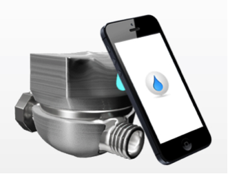

Upcoming Green Project in the World
The driblet:"Pico-hydropowered" Water saving device

The Driblet, a small, wireless device that attaches itself to
the pipe that connects your water supply to your showerhead or
your facet or hose and measures how much water you use.
The Driblet has its own app and syncs to your smartphone so you
can monitor and even control the amount of water being used
wherever it is in place. You can also monitor the temperature
of the water, thereby watching your energy use, too.
I can already envision my husband setting up an alarm on his
phone and then yelling upstairs to my teenaged son when he’s
in the shower: “That’s it! Turn it off !” after he’s used
whatever we deem to be an acceptable amount of water for a shower.
The coolest part about the Driblet, to me, is that it doesn’t
even use a battery. The water flowing through it gives it
enough power to operate. A hydro-powered device that helps
monitor your water use is pretty cool stuff. The Driblet could be
used in conjunction with solar hot water. The company has no plans
to integrate The Driblet with solar water heating systems but
perhaps that’s a partnership that will happen in the future.
Sausage Farm Goes Energy Independent
 The sausage is made with 100 percent renewable energy.
ARiES Energy served as the integrator of a biomass-to-energy
gasification system that was the first commercial application
of a Proton Power Inc (PPI) system in the world.
The sausage is made with 100 percent renewable energy.
ARiES Energy served as the integrator of a biomass-to-energy
gasification system that was the first commercial application
of a Proton Power Inc (PPI) system in the world.
PPI’s renewable energy system produces hydrogen on demand from
biomass and waste sources. This technology, referred to as
Cellulose to Hydrogen Power (CHyP), is ideal for clean energy
applications such as distributed or central-station electrical
power generation, hydrogen production or producing synthetic
fuels such as renewable gasoline, diesel and aviation fuel,
according to Abouelata.
This project uses locally grown switchgrass as a feedstock
to produce power from the hydrogen on-demand system. The PPI
system is supplemented by a 530-kW of solar PV array that was
installed in two parts, first in 2009 and then 2011.
Wampler Farms is now net-zero grid-connected; producing clean
renewable energy that provides its entire base electrical needs.
Victoria Government to Build Wind Plus Storage for Advanced Agriculture Facility
 The government of Victoria, Australia, recently completed an
agreement that supports the development of a wind power plus
energy storage facility for a crop farm in Western Victoria.
The new facility will power the expansion of Stawell,
Australia-based Nectar Farms, a “smart farming” company that,
according to the company’s website, focuses on environmentally
friendly farming with glasshouses, hydroponics and high-wire
cultivation.
The government of Victoria, Australia, recently completed an
agreement that supports the development of a wind power plus
energy storage facility for a crop farm in Western Victoria.
The new facility will power the expansion of Stawell,
Australia-based Nectar Farms, a “smart farming” company that,
according to the company’s website, focuses on environmentally
friendly farming with glasshouses, hydroponics and high-wire
cultivation.
The government said that it signed a 15-year support agreement
with clean energy developer Neoen Australia for delivery of the
integrated energy project, called Bulgana Green Power Hub.
According to a statement from the government, the power hub
will include a 204-MW wind farm and 20-MW battery. Details
about the battery’s MWh energy storage capacity were not provided.
“This is an exciting initiative which illustrates how renewable
energy can unlock opportunities for large, energy intensive
businesses to create jobs and build a better future for regional
communities,” Victoria Minister for Energy, Environment and Climate
Change Lily D’Ambrosio said.
Lead image credit to:CCO Creative Commons| Pixabay
© PLANETEERS 2018.